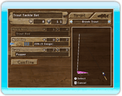

● Changing Tackle
Open the Fishing Menu by pressing the - Button and select "Change Tackle."
Select a Target Fish: Change your target fish by pressing the + Button or - Button. Fish you haven't unlocked yet won't appear.
Select Your Line Gauge: Highlight "Reel Line" and then press Left or Right on the +Control Pad or Control Stick to change the line gauge. Thicker lines are more durable, but are less appealing to fish. Thin lines are very appealing, but can break easily. Try to find the right balance!
Select a Lure: Highlight "Lure" by pressing up or down on the +Control Pad or Control Stick and press the A Button.
Lure Depth: Lures are organized according to depth.
・Top water: Floats on the water's surface
・Shallow: Floats just beneath the water's surface
・Medium: Floats at a middle depth
・Deep: Floats just above the bottom
・Bottom: Sinks all the way to the bottom
Highlight the depth you want by pressing left or right on the +Control Pad or Control Stick, then press the A Button to select it. Once you've selected a depth, choose the lure in that depth that you want to use. In general, you want to choose the lure with the highest appeal value for your target fish.